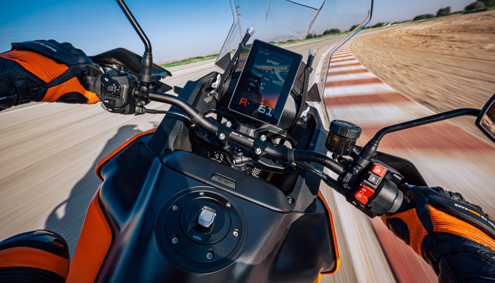
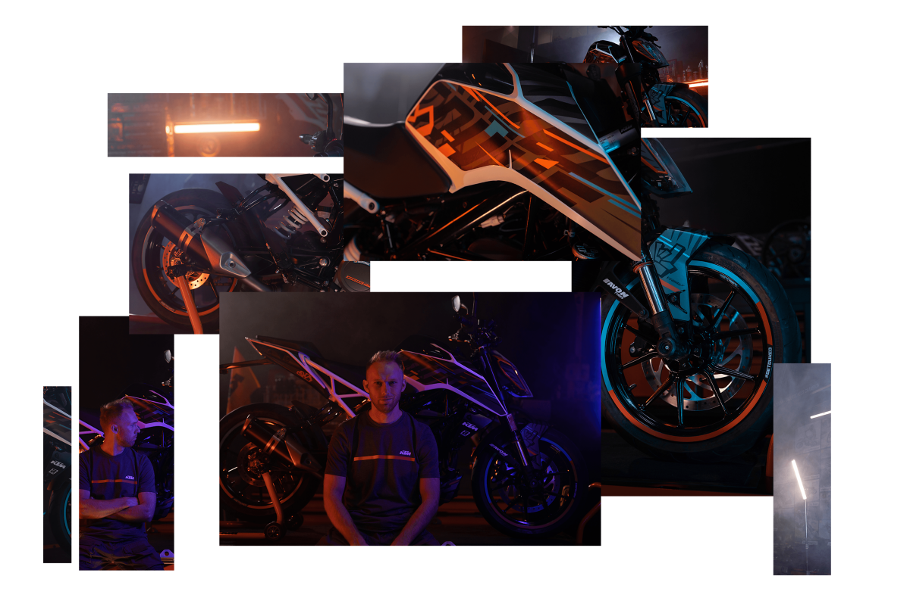
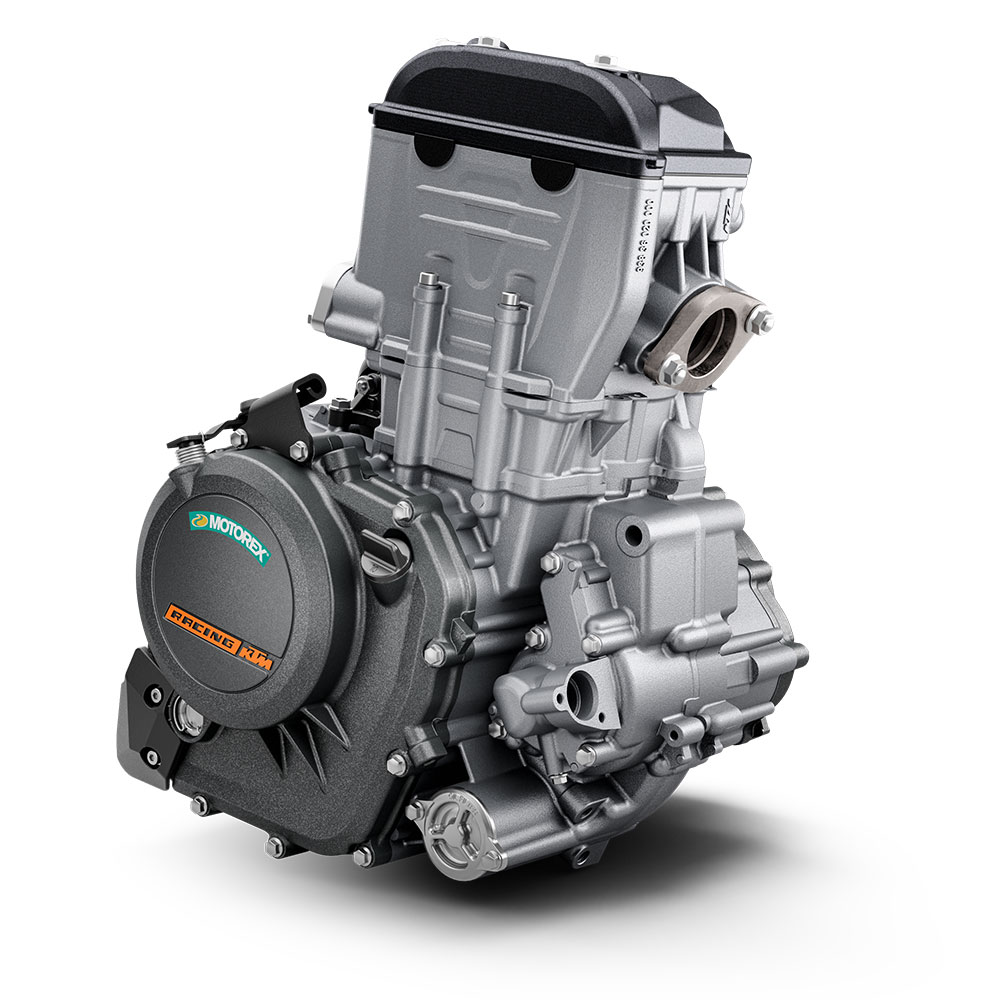
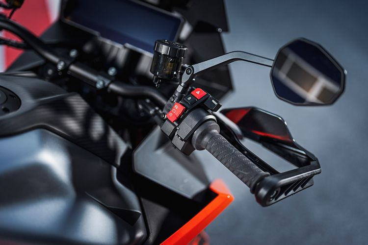
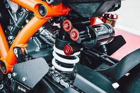
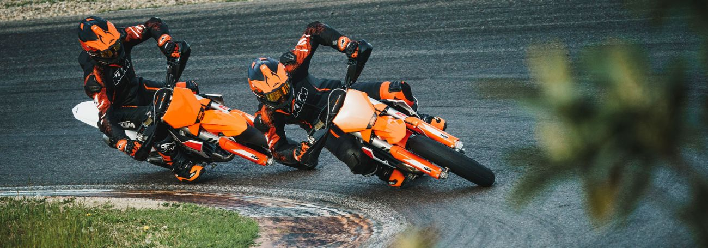

Nuevo lanzamiento: KTM Duke 2025
Descubre las innovaciones en diseño y rendimiento que posicionan a la KTM Duke 2025 como líder en su categoría.
Las motos KTM Duke son una serie de motocicletas deportivas fabricadas por la marca austriaca KTM, diseñadas para emocionar en cada curva.
La serie KTM DUKE representa la cima de la innovación, con un diseño agresivo y un rendimiento inigualable. Su icónico color naranja y negro no solo captura miradas, sino que define una experiencia de conducción única.
Desde la ágil Duke 125 hasta la imponente Duke 1290, cada modelo está diseñado con tecnología avanzada, incluyendo ABS, control de tracción y una ergonomía optimizada para un control total en cualquier terreno.
Únete a la comunidad KTM y descubre la libertad de la carretera con una moto que combina estilo, potencia y precisión.
Descubre las innovaciones en diseño y rendimiento que posicionan a la KTM Duke 2025 como líder en su categoría.
Mantén tu KTM DUKE en perfectas condiciones con estos consejos prácticos para maximizar su durabilidad.
Participa en nuestras jornadas de prueba y eventos exclusivos para pilotos KTM en tu ciudad.
Personaliza tu Duke con accesorios originales que potencian tanto el rendimiento como la estética.

Equipadas con ABS, control de tracción y modos de conducción avanzados.

Colores vibrantes y líneas agresivas que destacan en cualquier carretera.

Motores potentes diseñados para ofrecer aceleración y control en cada curva.

El sistema de frenos antibloqueo de KTM ofrece seguridad máxima, permitiendo frenadas precisas incluso en condiciones extremas.

Una interfaz moderna que proporciona información clara y personalizable, desde velocidad hasta modos de conducción.

Suspensiones ajustables WP que garantizan una conducción suave y un manejo superior en cualquier terreno.

¡Vive la pasión por las dos ruedas con la Comunidad KTM! Participa en eventos exclusivos, rutas en grupo y jornadas de prueba diseñadas para los amantes de KTM. Conecta con otros apasionados de la marca, comparte experiencias y siente la adrenalina de la carretera con el espíritu READY TO RACE.
La primera Duke, con motor LC4 de 609 cc y 50 hp, introdujo el estilo naked agresivo de KTM.
Debut del V-twin LC8 de 999 cc y 120 hp, un ícono del segmento hyper-naked.
Moto compacta de 15 hp para licencias A1, fabricada con Bajaj, accesible y moderna.
Con 44 hp y 373 cc, revolucionó el mercado A2 con diseño y tecnología avanzada.
"The Beast" con 180 hp, ABS en curvas y quickshifter, líder en motos naked.
La gama Duke evoluciona con electrónica avanzada y foco en emisiones reducidas.